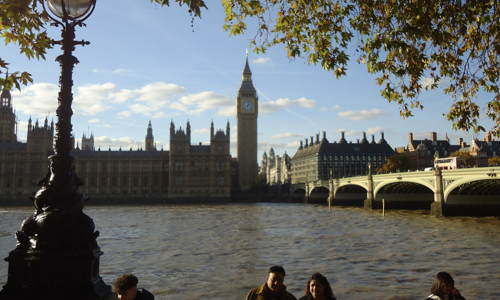

Sore itu, aku duduk di salah satu bangku di St. Thomas' Garden, London. Tepat di hadapanku, Big Ben berdiri di antara bangunan-bangunan Westminster. Langit begitu biru, hampir tanpa awan. Di sisi kanan taman, sebuah pohon besar dipenuhi daun-daun berwarna jingga dan keemasan. Cahaya matahari musim gugur menembus sela-sela rantingnya, membuat warna dedaunan terlihat semakin terang. Sesekali angin berembus, membuatku sedikit merapatkan pakaian.
Beberapa orang duduk di bangku taman menikmati matahari sore. Sebagian berjalan menyusuri jalan setapak, sementara yang lain tampak sibuk mengabadikan momen mereka di sekitar Westminster. Aku baru saja selesai berjalan cukup jauh, melewati tempat-tempat yang selama ini hanya sering kulihat melalui layar. Dan sekarang, setelah akhirnya berada di sana, aku memilih untuk duduk sebentar.
Ada sesuatu yang terasa berbeda ketika kita benar-benar mengunjungi tempat yang selama ini hanya menjadi bagian dari daftar impian. Big Ben, Westminster, dan London yang dulu terasa begitu jauh, sore itu ada tepat di depan mataku.
Aku duduk cukup lama, memikirkan betapa banyak hal yang sudah terjadi dalam hidupku sampai akhirnya aku bisa berada di sana. Lucu juga, bagaimana sebuah perjalanan bisa membuat kita berhenti sejenak dan melihat kembali sejauh apa kita sudah berjalan.
Beberapa hari sebelumnya, aku baru saja menerima dua surat penolakan. Dua kesempatan yang sebelumnya kuharapkan ternyata tidak berjalan sesuai keinginanku. Sejujurnya, ada banyak hal yang sedang kupikirkan tentang masa depan. Tentang pendidikan, pekerjaan, kesempatan berikutnya, dan bagaimana aku akan melanjutkan semuanya setelah ini.
Mungkin karena itulah, ketika sedang berjalan-jalan di London bersama Callista, percakapan kami hari itu terasa begitu membekas. Kami berbicara tentang banyak hal, termasuk perjalanan hidup, pilihan-pilihan yang pernah kami ambil, dan bagaimana masing-masing dari kami berusaha membangun masa depan.
Ada satu hal yang kemudian membuatku berpikir cukup lama.
Selama ini, aku selalu merasa harus mengusahakan semuanya sendiri. Aku terbiasa mencari jalan keluar, memikirkan kemungkinan terburuk, dan memastikan bahwa aku punya rencana untuk menghadapi apa pun yang mungkin terjadi.
Aku sudah terbiasa bekerja sejak muda. Pernah mencuci piring, bekerja sebagai cleaning service, dan melakukan berbagai pekerjaan lain untuk bisa bertahan hidup selama berada di luar negeri. Aku tidak pernah merasa malu dengan pekerjaan-pekerjaan itu. Selama pekerjaannya halal dan bisa membantuku memenuhi kebutuhan, serta membantu keluarga, aku tidak keberatan melakukannya.
Bagiku, tidak ada pekerjaan yang terlalu kecil ketika ada tanggung jawab yang harus diselesaikan.
Aku juga terbiasa hidup dengan sangat berhati-hati dalam mengeluarkan uang. Aku bukan tipe orang yang selalu memikirkan bagaimana caranya terlihat mewah atau mengikuti tren. Bahkan, pernah ada seseorang yang mengomentari caraku berpakaian dan menyebutnya kampungan.
Namun, sejujurnya, aku tidak terlalu memikirkan hal-hal seperti itu. Aku lebih memilih menyimpan uang untuk kebutuhan yang memang penting. Ada biaya hidup yang harus dibayar, pendidikan yang harus diselesaikan, keluarga yang ingin kubantu, dan tabungan darurat yang harus kupersiapkan.
Aku tahu betul rasanya hidup tanpa jaring pengaman finansial. Tidak ada seseorang yang bisa selalu kuandalkan untuk memastikan bahwa semua kebutuhan akan terpenuhi. Aku harus memikirkan tempat tinggal, makanan, biaya sehari-hari, pendidikan, dan berbagai kebutuhan lainnya. Aku tidak punya kemewahan untuk sekadar berhenti berusaha ketika sesuatu tidak berjalan sesuai rencana.
I have always lived without a safety net.
Mungkin karena itulah aku menjadi seseorang yang sangat berhati-hati dalam mengambil kesempatan. Aku tidak ingin melewatkan sesuatu yang mungkin bisa mengubah hidupku. Aku mendaftar berbagai program, mengikuti kompetisi, membangun jaringan, mengambil pekerjaan, dan terus mempelajari keterampilan baru. Setiap kesempatan terasa penting karena aku tidak pernah tahu kapan kesempatan berikutnya akan datang.
Aku selalu merasa harus punya rencana A, B, C, bahkan sampai Z. Aku berusaha mempersiapkan diri untuk berbagai kemungkinan karena ada banyak hal dalam hidup yang tidak bisa kutanggung jika sampai gagal.
Ketika aku menceritakan hal-hal tersebut kepada Kalista, ada satu kalimat darinya yang kemudian membuatku terdiam.
Ia mengatakan bahwa mungkin selama ini aku merasa tidak punya backup karena terbiasa mengurus semuanya sendiri. Aku merasa harus bekerja keras, mempersiapkan segala sesuatu, dan memastikan bahwa hidupku tetap berjalan. Tetapi, sebenarnya, aku tidak pernah benar-benar sendirian.
Ia mengatakan sesuatu yang kurang lebih seperti ini:
“Mungkin kamu memang merasa tidak punya backup dalam bentuk keluarga yang bisa selalu menopangmu secara finansial. Tapi sebenarnya, backup kamu itu Allah. Mungkin selama ini kamu tidak menyadarinya, tetapi lihat sejauh apa kamu sudah dibawa Syafira. Berapa banyak tempat yang kamu jelajahi, kesempatan yang kamu dapatkan, bahkan lebih banyak orang dengan backup jauh lebih besar, belum tentu mendapatkan hal-hal tersebut”
Aku tidak langsung menjawab. Kalimat itu sederhana, tetapi rasanya seperti membuatku melihat kembali banyak hal yang selama ini terlewatkan.
Selama ini, aku terlalu sering menghitung apa saja yang sudah kulakukan untuk bisa sampai di titik ini. Aku mengingat berapa banyak formulir yang sudah kukirim, berapa banyak seleksi yang kuikuti, berapa malam yang kuhabiskan untuk belajar, dan berapa kali aku harus mencoba lagi setelah mengalami penolakan.
Namun, aku jarang berhenti untuk memikirkan hal-hal yang sebenarnya tidak pernah sepenuhnya berada dalam kendaliku.
Aku bisa berusaha mendapatkan kesempatan untuk belajar di luar negeri, tetapi aku tidak bisa memaksa kesempatan itu datang kepadaku. Aku bisa mempersiapkan diri sebaik mungkin, tetapi aku tidak bisa mengatur siapa yang akan kutemui, pintu mana yang akan terbuka, atau pengalaman seperti apa yang menungguku di tempat yang belum pernah kukunjungi.
Aku jadi teringat pada beberapa kesempatan besar yang pernah datang dalam hidupku.
Ketika mendaftar program beasiswa pertukaran pelajar ke Amerika Serikat, ada ribuan orang yang juga memiliki mimpi yang sama. Aku belajar, mempersiapkan diri, mengikuti seleksi, dan berusaha memberikan yang terbaik. Namun, kalau dipikir-pikir lagi, kemungkinan untuk terpilih dari begitu banyak pendaftar itu sebenarnya tidak besar. Aku bisa melakukan semua persiapan yang diperlukan, tetapi aku tidak pernah bisa memastikan bahwa namaku akan menjadi salah satu yang dipilih.
Hal yang sama terjadi ketika aku mendapatkan kesempatan Erasmus di Jerman, mengikuti berbagai program internasional, hingga akhirnya mendapatkan kesempatan besar untuk belajar langsung dari para akademisi di Oxford. Dari sekian banyak orang yang mendaftar, dari begitu banyak orang yang juga punya kemampuan dan mimpi yang sama, somehow Allah mengizinkanku menjadi salah satu yang mendapatkan kesempatan itu.
Kesempatan-kesempatan inilah yang kemudian membawaku melihat dunia, bertemu orang-orang baru, dan mengalami hal-hal yang dulu bahkan tidak pernah kubayangkan.

And that's Allah's plan all along.
Aku mungkin bekerja keras untuk bisa sampai di titik ini. Aku belajar, mempersiapkan diri, mencoba berkali-kali, dan berusaha mengambil setiap kesempatan yang datang. Tetapi pada akhirnya, bukan aku yang menentukan apakah aku akan terpilih, kapan kesempatan itu datang, atau sejauh mana perjalanan itu akan membawaku. Aku bisa berusaha, tetapi Allah yang menentukan apakah aku bisa sampai di sini.
Dan itu yang kadang suka aku lupa. Aku terlalu fokus mengingat seberapa keras aku bekerja untuk mendapatkan sesuatu, sampai lupa bahwa kesempatan untuk mendapatkan sesuatu itu sendiri juga merupakan rezeki dari Allah.
Aku sempat menghentikan lamunanku dan kembali melihat sekeliling.
Di hadapanku, Big Ben masih berdiri dengan megah di antara bangunan-bangunan Westminster. Langit sore itu masih begitu biru. Di sebelah kanan, pohon besar dengan dedaunan jingga dan keemasan menaungi sebagian taman. Cahaya matahari jatuh di atas bangku-bangku kayu dan jalan setapak. Beberapa orang masih duduk menikmati sore, sementara yang lain berjalan melewati taman dengan urusan mereka masing-masing.
Pemandangan itu terasa begitu tenang. Tidak ada sesuatu yang istimewa sedang terjadi. Orang-orang hanya menjalani sore mereka seperti hari-hari biasa. Namun, aku justru sedang duduk di sana, memikirkan perjalanan hidup yang membawaku sampai ke tempat itu.
Aku kembali teringat pada banyak pintu yang pernah terbuka ketika sebelumnya aku merasa tidak punya jalan keluar. Ada orang-orang yang hadir di waktu yang tidak pernah kurencanakan. Ada kesempatan yang datang dari arah yang tidak pernah kubayangkan. Ada perjalanan yang awalnya tidak pernah masuk dalam rencanaku, tetapi justru menjadi bagian penting dalam hidupku.
Sampai akhirnya, aku bisa duduk di sebuah taman di London, setelah sebelumnya mendapatkan kesempatan untuk belajar langsung dari para profesor dan akademisi di lingkungan Oxford.
Kalau dipikirkan lagi, berapa banyak hal yang harus terjadi agar aku bisa sampai di sana? Berapa banyak keputusan yang dibuat orang lain, berapa banyak pertemuan yang harus terjadi, dan berapa banyak keadaan yang harus berjalan beriringan?
Aku bisa mengusahakan banyak hal, tetapi aku tidak pernah benar-benar mengendalikan semuanya.
Mungkin selama ini aku terlalu sering memisahkan antara kerja keras dan pertolongan Allah, seolah-olah keduanya adalah dua hal yang berbeda. Padahal, keduanya bisa berjalan beriringan. Kita berusaha, tetapi Allah yang membuka jalan. Kita mempersiapkan diri, tetapi Allah yang mempertemukan kita dengan kesempatan. Kita berdoa dan berharap, tetapi Allah yang paling tahu kapan sesuatu memang baik untuk kita.
Aku sering mengatakan, “Aku berhasil sampai di sini karena aku bekerja keras.”
Dan itu memang benar. Aku tahu betapa banyak usaha yang sudah kulakukan. Aku tahu berapa banyak hal yang harus kukorbankan untuk bisa berada di titik ini.
Namun, mungkin ada satu bagian yang selama ini sering terlupakan: dan Allah mengizinkanku sampai di sini.
Sebab, ada banyak orang yang mungkin jauh lebih berbakat, lebih pintar, atau bahkan bekerja jauh lebih keras dariku, tetapi belum mendapatkan kesempatan yang sama pada waktu yang sama. Bukan berarti mereka kurang berusaha atau tidak pantas mendapatkannya. Mungkin memang ada waktu dan jalan yang berbeda untuk setiap orang.
Aku mulai memahami bahwa tidak semua hal bisa diselesaikan hanya dengan membuat perencanaan yang lebih matang. Ada bagian dari kehidupan yang memang harus kita serahkan kepada Allah setelah kita melakukan bagian kita sebaik mungkin.
Dulu, aku berpikir bahwa rasa aman datang dari memiliki banyak rencana. Semakin banyak kemungkinan yang kupersiapkan, semakin kecil kemungkinan aku akan terjatuh. Aku berusaha mengantisipasi semuanya karena aku takut tidak punya siapa-siapa untuk membantuku ketika sesuatu berjalan salah.
Namun, mungkin tawakal bukan berarti kita berhenti membuat rencana atau tidak lagi berusaha. Justru kita tetap melakukan bagian kita dengan sungguh-sungguh, tetapi belajar menerima bahwa hasil akhirnya bukan sepenuhnya berada di tangan kita.
Aku masih ingin bekerja keras. Aku masih ingin melanjutkan pendidikan, membangun karier, mencoba berbagai kesempatan, dan melihat lebih banyak tempat di dunia. Aku masih punya banyak mimpi yang ingin kuusahakan.
Tetapi, aku tidak ingin terus-menerus menjalani semuanya dengan rasa takut. Aku tidak ingin setiap penolakan membuatku merasa bahwa masa depanku sedang tertutup. Aku juga tidak ingin terlalu sibuk memastikan bahwa semua hal berjalan sesuai rencana sampai lupa bahwa ada Allah yang selama ini selalu menyertaiku.
Dua surat penolakan yang kuterima beberapa hari sebelumnya memang nyata. Rasa kecewanya juga nyata. Aku tidak perlu berpura-pura bahwa semuanya baik-baik saja atau bahwa setiap kegagalan tidak pernah menyakitkan.
Namun, dua surat itu bukan keseluruhan cerita hidupku.
Ada begitu banyak hal yang dulu tidak berjalan sesuai rencana, tetapi ternyata tetap membawaku ke tempat-tempat yang tidak pernah kubayangkan. Ada banyak kesempatan yang tidak pernah berhasil kudapatkan, tetapi ada pula pintu-pintu lain yang terbuka pada waktu yang tidak pernah bisa kuatur sendiri.
Aku kembali menatap Big Ben. Daun-daun jingga di atas kepalaku bergerak pelan tertiup angin. Cahaya matahari masih menyinari sebagian taman, sementara bayangan pohon jatuh memanjang di atas jalan setapak. Aku masih duduk di bangku yang sama. Orang-orang masih berlalu-lalang, beberapa masih menikmati sore mereka, dan London tetap berjalan dengan kesibukannya.
Tetapi ada sesuatu dalam diriku yang terasa berbeda setelah percakapan itu.
Aku datang ke London dengan membawa dua surat penolakan dan begitu banyak pertanyaan tentang masa depan. Namun, sore itu, di hadapan Big Ben, aku justru diingatkan pada begitu banyak hal yang pernah Allah izinkan terjadi dalam hidupku.
Aku mungkin tidak memiliki financial safety net dalam bentuk keluarga yang selalu bisa menopangku secara finansial. Aku mungkin harus terus bekerja, belajar, dan mempersiapkan banyak hal sendiri. Tetapi bukan berarti aku tidak memiliki tempat untuk bergantung.
Selama ini, aku selalu mengingat bagaimana kerasnya aku berusaha untuk bisa sampai di sini. Aku mengingat setiap pekerjaan, setiap kesempatan yang kuusahakan, setiap malam yang kuhabiskan untuk belajar, dan setiap keputusan yang harus kuambil sendiri.
Sekarang, aku ingin belajar mengingat hal yang lain juga: betapa banyak hal yang Allah mudahkan, betapa banyak pintu yang Allah bukakan, dan betapa banyak langkah yang ternyata sudah Allah tuntun, bahkan ketika aku sendiri tidak tahu ke mana harus melangkah.
Mungkin aku memang tidak pernah benar-benar punya backup seperti yang selama ini kubayangkan. Tetapi ternyata, aku tidak pernah benar-benar sendirian.
Aku hanya terlalu sibuk menghitung langkahku sendiri, sampai lupa siapa yang selama ini menuntunku pulang.
Pesan dari pembaca
0 pesan